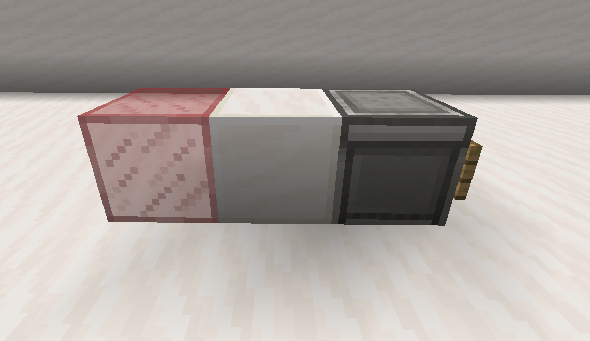
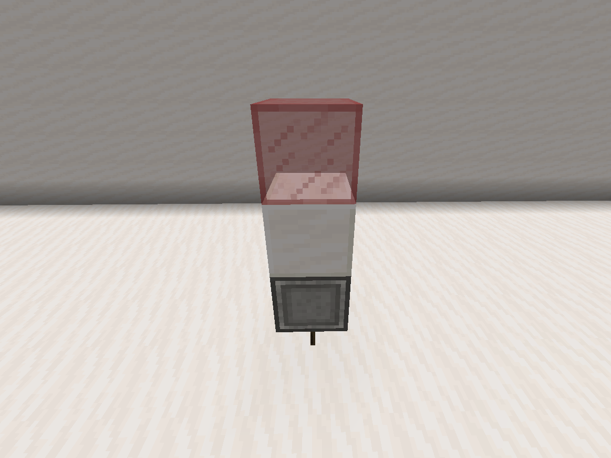
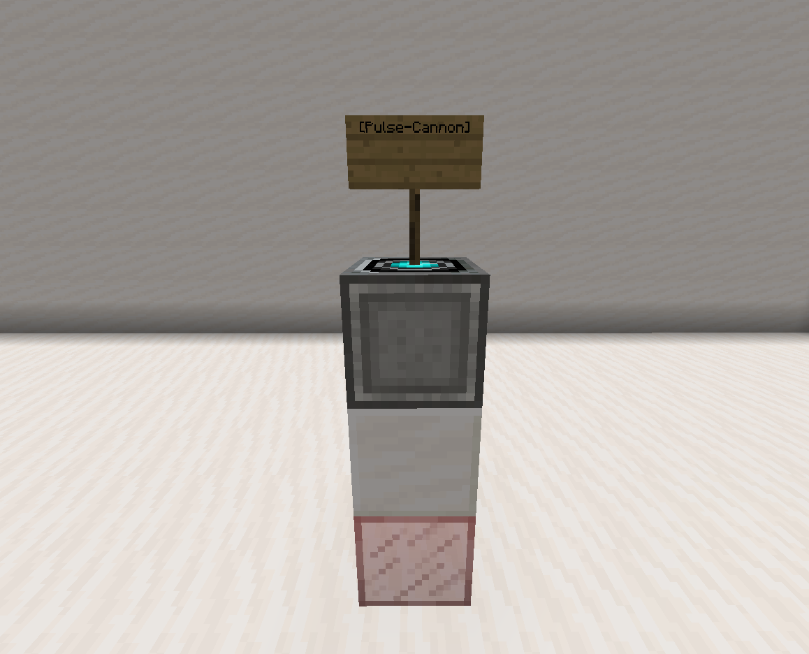
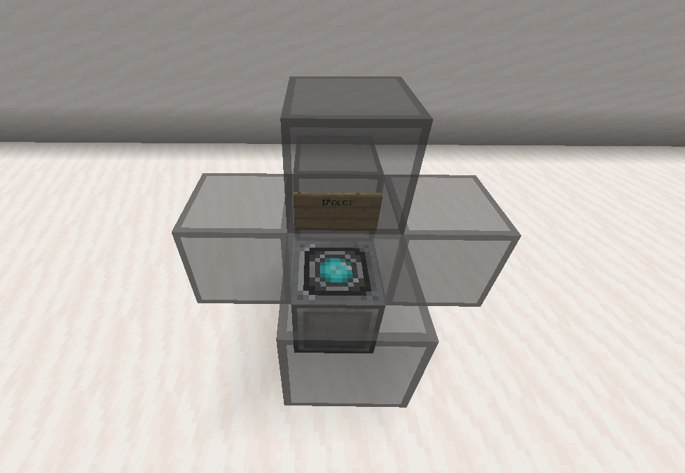
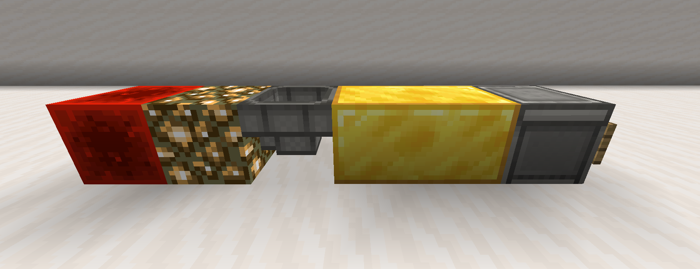
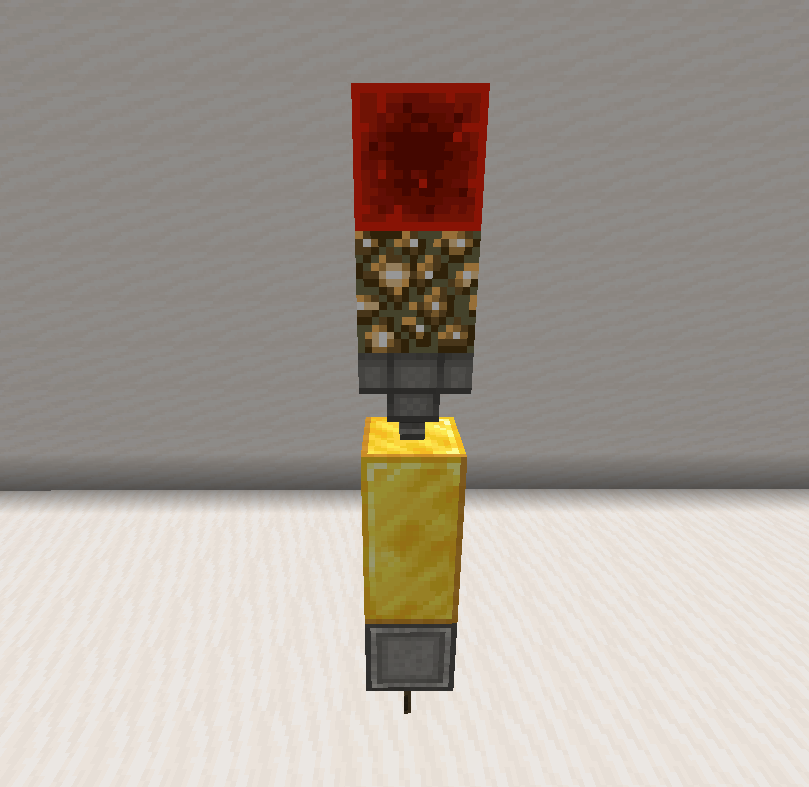
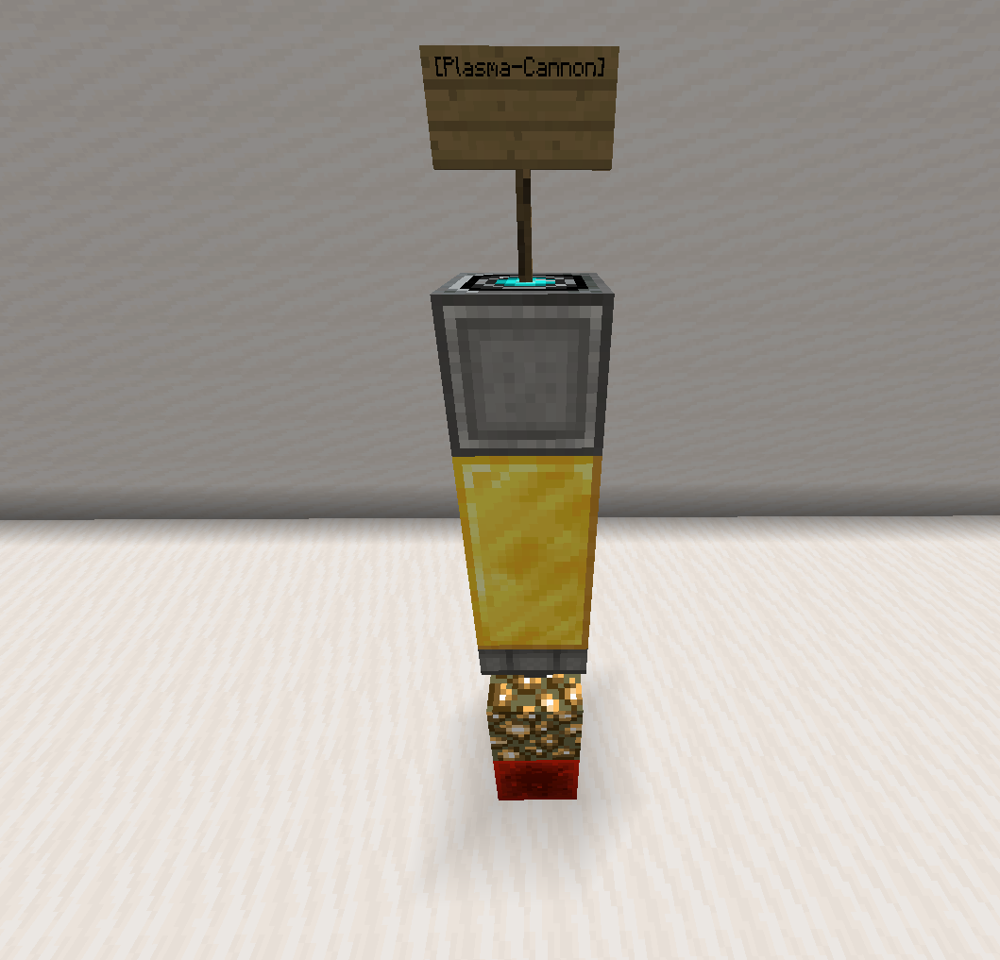

Home
Weapons
Multiblock weapons are mainly used for ship-to-ship combat, but can also be used as static defence.
Pulse cannon



Pulse cannons do light damage but have a high range, making them good for light defence.
| Required blocks | |
|---|---|
| Glass block (any) | 1 |
| Quartz block | |
| Dropper (input) | |
| Sign Sign text: |
1 [Pulse-Cannon] |
| Ammunition | 4 Quartz |
| Range | 73 |
Point defence laser cannon
Point Defence Laser Cannon's, (PDLC's) are the cheapest weapon type, they can also be aimed by a player.
To aim a PDLC, you need to 'assign' a book to the cannon, to do this name a book
| Required blocks | |
|---|---|
| Any glass block OR Any glass pane OR Iron block OR Iron bars OR Any slab OR Any trapdoor OR |
4-5 |
| Sign Sign text: |
1 [PDLC] |
| Dropper (input) | 1 |
| Ammunition | 8 Resonant crystals |
| Range | ~110 |
Ion beam

Ion beams deal no damage to ships, instead they are designed to drain shields, draining 16 prismarine crystals in a 5-block radius around the block hit.
| Required blocks |
|---|
| Ammunition | 16 Resonant crystals |
| Range |
Plasma cannon



Once activated, plasma cannons will fire a narrow pulse out of the redstone block, dealing moderate damage to any blocks in it's range.
| Required blocks | |
|---|---|
| Redstone block | 1 |
| Glowstone block | |
| Hopper | |
| Gold block | 2 |
| Dropper (input) | 1 |
| Sign Sign text: |
1 [Plasma-Cannon] |
| Ammunition | 3 Redstone blocks |
| Range | 36 |